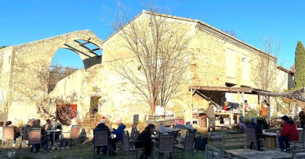
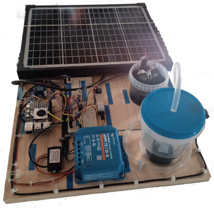
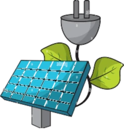

Présentation
Jardin libre - Construisons du code au coeur du vivant
Sobriété numérique, technologie citoyenne, préservation de l’eau et animation éducative
autour du libre. Jardin Libre est un projet qui
a germé au sein du collectif Arles-GNU/Linux et qui a démarré durant l’été 2025 en collaboration avec La
Verrerie.
Une station météo collecte des informations via des capteurs d’humidité, de température, de pression
atmosphérique. Celle-ci est connectée à un
ordinateur miniature et peu coûteux, le Raspberry Pi qui fonctionne sous le système d'exploitation
Linux.
Cette installation est autonome en énergie grâce au panneau solaire et sa connexion locale au WI-FI.
-> Découvrez également le “Wiki”, une documentation participative hébergée sur le Raspberry Pi,
accessible via des QRcodes placés dans le jardin. Jardin libre est le résultat d’ateliers
dco-construction numérique (apprentissage du code Python, html, CSS, Javascript) à destination de tous,
des collégiens aux séniors.
Retour en haut de la page

Le Projet du Jardin Libre
Un potager connecté... mais déconnecté du cloud !
Se reconnecter à la nature : Et si un jardin pouvait nous apprendre à coder, à coopérer,
et à préserver l’eau ?
À Arles, dans le tiers-lieu La Verrerie, nous avons décidé de faire pousser du libre… au sens propre
comme au figuré.
Et si coder permettait de se reconnecter à la nature ?
Dans ce projet ludique et engagé, les participant·es fabriquent leur propre station de jardin connectée
à
partir d’un Raspberry Pi: température, humidité, lumière, arrosage… tout est mesuré pour mieux
comprendre son environnement.
Retour en haut de la page

Autonomie grâce à l’énergie solaire
La station est pilotée par un Raspberry Pi, alimentée à l’énergie solaire et maintenue en
tension
par une petite batterie.
Quand la terre demande, la technologie s’exécute, quelle que soit l’heure.
L’occasion d’apprendre à coder en Python, s’initier à l’électronique, explorer les données météo et
découvrir l’univers des logiciels libres.
Une aventure entre fablab, écologie et numérique éthique à ne pas manquer!
Par l’association Arles-GNU/Linux.
Retour en haut de la page
Un exemple de développement low-tech
Qu’est-ce que la low-tech?
La low-tech est une manière de faire les choses avec simplicité, sans gaspillage. Pas besoin
d’objets compliqués ou à la mode. Ce
sont, le plus souvent, des outils utiles, faciles à faire soi-même, à comprendre, qu’on peut réparer
soi-même.
À quoi ça sert?
La low-tech permet de répondre à nos besoins tout en respectant au mieux la planète. On peut utiliser la
low-tech pour:
• Faire de l’énergie (par exemple avec le soleil) • Mieux utiliser les ressources • Réduire les
déchets
• Se loger, se déplacer, se soigner, se laver…
• Et arroser son jardin de manière éco-ludico-responsable. En résumé: faire ce qu’on fait tous les
jours, mais de façon plus simple, plus économique et plus écologique.
Pourquoi est-ce important? Parce que ça répond à nos vrais besoins, pas qu’à des envies inutiles, et nous
rend plus autonomes. C’est bon pour nous… et pour la planète!
Retour en haut de la page">Retour au menu
Lieu : La Verrerie, 4, place Léopold Moulias
13200 ARLES
Contact : 06 56 67 49 21
Email : numerique@laverreriearles.fr